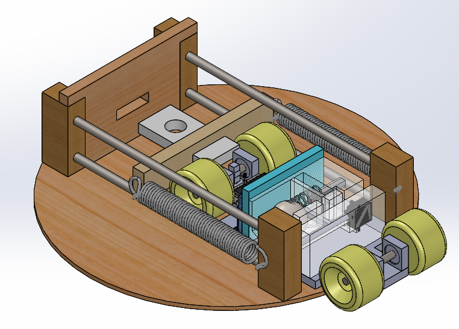
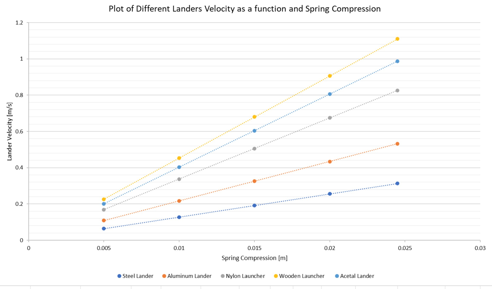
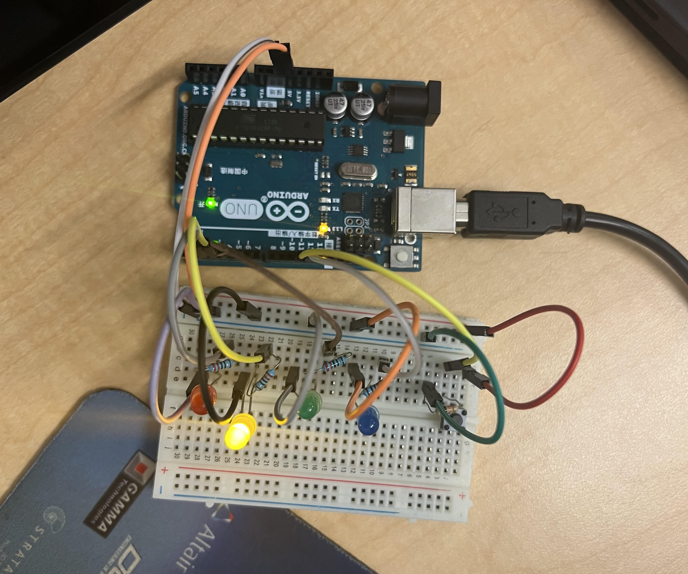
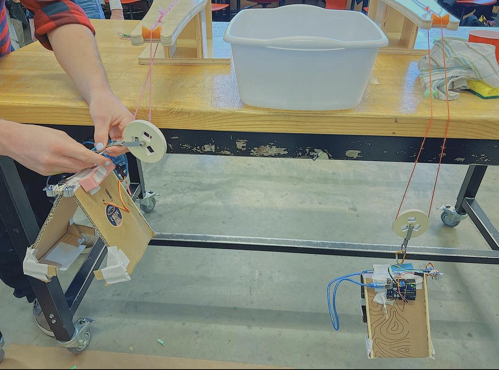
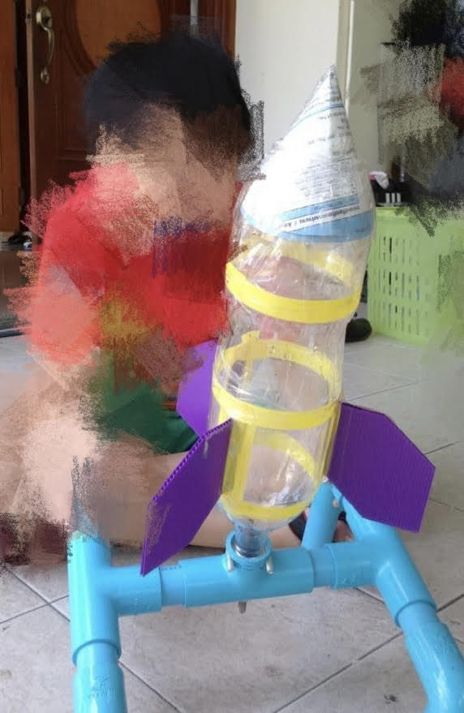
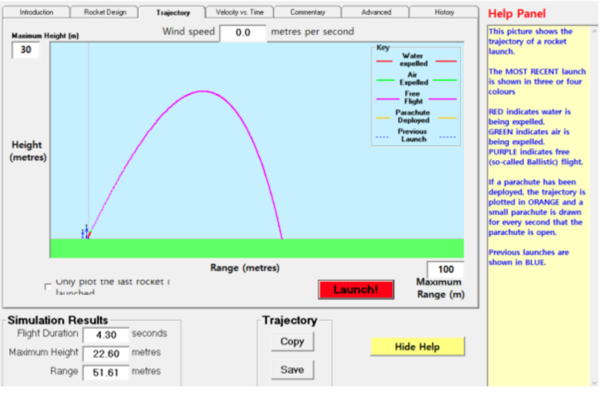

Titan Endurance Project
MECH 223: Introduction to Mechanical Design
@ University of British Columbia
January 2023 - April 2023

As part of my second year mechanical engineering design course project, I worked with a group of 6 engineering students to design,
develop and construct a 2 body project that resemble a spacecraft landing on a Saturn’s moon.
This project consists of 2 independent body that are together.
This project consists of 2 independent body that are together.
- First is the “orbiter” where the orbiter resemble the spacraft vehicle that will autonomously launched by its stored energy launching mechanism.
- On the orbiter, the second body call “lander launcher” is on, where the lander launcher is responsible to deploy the randomly assigned spherical object of various size and dimension on the target.
Lander Launching Spring Calculation
I took on the challenge of creating an Excel sheet that performed complex calculations to determine the precise spring force necessary for launching landers of different sizes, masses, and materials. This involved meticulously analyzing the spring constant requirements based on the unique properties of each lander. Upon collecting the data, I conducted a comprehensive data analysis, delving into the correlation between spring deflection and lander velocity. To illustrate these findings, I generated graphical representations, highlighting the relationship visually. This undertaking demonstrated my proficiency in data-driven engineering, problem-solving, and effective communication through visual representation.
Prototyping the lander launching mechanism
The lander launching mechanism was a critical project element, using a precisely calculated compression spring for deploying landers of various sizes and materials. The V-shaped pathway design allowed versatile and minimal contact deployment. Our innovative 3D-printed launching gate ensured stability, employing plastic soldering for robustness. This mechanism showcased our engineering precision, adaptability, and modern manufacturing techniques for successful lander deployment.
Competition
This project introduces a way to properly manage and allocate tasks and resources. It also help me to gain experiences using machines tool like drill press, bandsaw, 3d printer, laser and water jet cutter to construct the prototype and final design.
MATLAB Beam Deflection, CalculationProject
UBC Solar Design Team
@ University of British Columbia
Summer 2023
As part of my responsibilities in UBC Solar Design Team, i recognized thethe need for enhanced efficiency and accuracy in analyzing chassis tube and support structure properties, I undertook the development of a MATLAB code. This code streamlines the time-consuming manual calculations of critical factors such as bending moment, stress, and deflection. By inputting specific parameters and design variables, the MATLAB code employs advanced approximation techniques to rapidly solve for these crucial mechanical characteristics.
Beanding Moment Calculatin Sample
% Define beam properties
length = 5; % Length of the beam (in meters)
E = 2e11; % Young's modulus of the material (in N/m^2)
ro = 0.05; % Outer radius of the hollow tube (in meters)
ri = 0.04; % Inner radius of the hollow tube (in meters)
% Calculate moment of inertia of the hollow tube
I = (pi / 4) * (ro^4 - ri^4);
% Define loading conditions
x = 2; % Position where the load is applied (in meters)
P = 1000; % Transverse load applied (in Newtons)
% Define analysis parameters
num_points = 100; % Number of points for discretization
% Calculate beam deflection using Euler-Bernoulli beam theory
x = linspace(0, length, num_points); % Discretized beam length
deflection = zeros(size(x));
for i = 1:num_points
if x(i) <= x
deflection(i) = (P * x(i)^2 * (3 * x - x(i))) / (6 * E * I * length);
else
deflection(i) = (P * x^2 * (3 * x(i) - x)) / (6 * E * I * length);
end
end
% Plot the deflection profile
figure;
plot(x, deflection);
title('Hollow Tube Deflection Profile');
xlabel('Position along the beam (m)');
ylabel('Deflection (m)');
grid on;
Arduino-Powered RC Aircraft Project
Personal Project
Summer2022

I undertook a project to conceive and build an Arduino-controlled RC airplane, aiming to merge innovative technology with practical application. I initiated the
venture by seamlessly integrating Arduino as the central controller, enabling precise and adaptable management of the aircraft's functions.
This encompassed the design and realization of the airplane's transmitter and receiver signal system, intricately interwoven with Arduino and
intricate electrical circuitry. Leveraging my expertise in microcontrollers, NRF24L01 wireless communication modules, and diagnostic tools like multimeters
and oscilloscopes, I ensured the accurate and reliable transmission of signals between the Arduino-powered transmitter and the onboard receiver.
Furthermore, I spearheaded the development of diverse prototype aircraft, orchestrating the harmonious integration of electronics, sensors,
and communication modules into the aircraft's structural framework. Through this iterative approach, I continually refined flight control,
stability, and communication, resulting in a highly functional and innovative RC airplane. This project not only underscores my adeptness
at combining cutting-edge technology with practical engineering but also highlights my commitment to pushing the boundaries of conventional
RC aircraft design, all while exemplifying my passion for aviation and electronics.
Autonomous Claw Project
APSC101: Introduction to Engineering Design II
@ University of British Columbia
January 2022-April 2022

During my first year of engineering, I had the incredible opportunity to be part of a dynamic team comprising six talented students,
working on an autonomous claw project. This endeavor was all about designing and bringing to life a cardboard claw capable of picking up a diverse array of objects.
Our aim was to create a device that combined the power of a power bank with the ingenuity of a programmed Arduino Uno and a servomotor sensor.
The journey began with brainstorming sessions where each team member contributed their unique ideas and perspectives.
It was fascinating to witness the amalgamation of these ideas into a cohesive plan that would guide our project.
One of the most captivating aspects of the project was the iterative design process.
We didn't just settle for the first design; instead, we delved into prototype testing and analysis>.
This involved experimenting with various claw designs, ensuring they were optimized to pick up objects of varying sizes –
from the small to the considerably larger ones. This phase demanded meticulous attention to detail, as we fine-tuned the claw's mechanics and movements
to ensure its efficiency and accuracy.
Through this project, I developed not only technical skills but also soft skills that are crucial in any collaborative setting.
Effective communication became the backbone of our team's progress. We had to regularly update each other on our individual tasks, align our
efforts towards the overarching goal, and troubleshoot any obstacles together. This experience was a real-world lesson in teamwork, requiring us to synergize our
strengths and work cohesively towards success.
As we advanced from the planning and sketching stages to actual manufacturing, I found myself immersed in the hands-on aspect of engineering.
Constructing the claw from cardboard, integrating the electronic components, and seeing our creation come to life was a gratifying experience
that bridged the gap between theoretical knowledge and practical application.
Of course, no project is without its fair share of challenges. Our team encountered hurdles along the way, from technical glitches to design refinements.
Yet, it was in these moments of problem-solving that I truly grasped the essence of engineering – the ability to identify issues, analyze them critically, and devise
effective solutions.
During the Claw competition
Looking back, this autonomous claw project stands as a testament to my growth as an engineer and as an individual. It taught me the art of transforming abstract ideas into tangible realities, while fostering a deep appreciation for collaboration, communication, and adaptability. The skills I honed during this project, from coding to hands-on construction, continue to serve as pillars of my engineering journey, propelling me forward with confidence and enthusiasm.
Water Bottle Rocket Project
@ Ramkhamhaend Advent International School
Spring 2018

My enthusiasm for machinery and aerospace was kindled during my high school years.
One standout experience was during a design course where my team and I undertook the exciting challenge of
creating a water bottle rocket capable of flying in a predetermined direction and maintaining flight for an extended duration.
Our mission encompassed not only building the rocket but also producing a comprehensive report detailing the design and the physics
intricately woven into the experiment.
A tangible embodiment of our efforts is illustrated in the right figure, showcasing a
snapshot of the water bottle rocket project I was involved in. The focal point of this endeavor lay in
illuminating core principles of physics such as Newton's Third Law of Action and Reaction, along with the Bernoulli principle.
Beyond the scientific aspect, our team embarked on a digital journey, utilizing virtual software to meticulously simulate the ideal
trajectory of the rocket before embarking on the physical construction.

The scientific and physical dimensions of the project beckoned exploration.
In a quest to optimize the rocket's design, I delved into external research,
particularly investigating the influence of the nose cone on the rocket's flight trajectory.
This curiosity was ignited by the conventional use of round-nosed aircraft and the scarcity of blunt noses in aviation.
My investigation encompassed diverse nose cone shapes—round (parabolic), bullet, and blunt. After a series of methodical trials,
it was evident that the parabolic shape yielded the most favorable results.